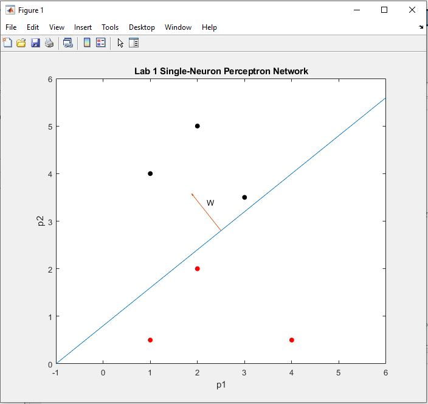

| Notable Omissions (Don't have any work save from these projects) |
|---|
Notable Omissions:
|
| Computer Graphics Class Labs with C++ and OpenGL (Sept-Dec 2021) |
|
The github repo for the assignments I did in this class are here: https://github.com/GregoryOrd/CPSC453_ComputerGraphics Lab 1 - Fractal GeometryThis was the first application built as part of the "CPSC 453 - Introduction to Computer Graphics" Course. We needed to create four scenes and generate the geometry for a new fractal shape in each scene. Keyboard inputs were used to switch between scenes as well as change the number of iterations drawn for each scene. The four fractal shapes we needed to generate for this assignment were:
|
| Machine Learning Class Labs with Matlab (Sept-Dec 2021) |
|
The github repo for the assignments I did in this class are here: https://github.com/GregoryOrd/ENEL525_MachineLearning Lab 1 - Single-Neuron Perceptron NetworkThis was the first lab assignment of the "ENEL 525 - Machine Learning for Engineers" Course. We needed to use a single-neruon perceptron network to classify 2D input vectors into two classifications. We needed to plot the decision boundary after training with an initial data set.  |
| ENSF 409 ToolShop Client/Server Application (March/April 2019) |
Project DescriptionThis application was built as the term project for the ENSF 409 - Principles of Software Development course at the University of Calgary. The instructor of the course introduced this project first as a part a weekly lab assignment. The course focused heavily on object oriented design, and used Java as the language of instruction. The first step in the lab assignment was to analyze the project's problem statement and create a UML class diagram. The second step was use this class diagram to create a simple console based application. Text files were provided as inital data input into the application, and the user was presented with a menu from the command-line/console to add, delete, and edit information related to tools in the inventory of a toolshop. Weeks later, the work for this lab assignment was brought back for the course's final project. The goal of the final project was to transform this simple one machine console based application into a Client-Server application. Lots of emphasis was placed proper system design and another set of class diagrams was created. The instruction was to build this application using the Model-View-Controller (MVC) design pattern. A simple graphical user interface was built for the client, and a mySQL database replaced text files on the server-side. The client and server programs communicated through socket programming, and the server was required to use a thread pool to handle concurrency and multiple clients at the same time. Lessons LearnedFrom a learning standpoint, this was a very involved project. It helped in me to develop an understanding of client-server architecture, the MVC design pattern, multithreading and socket programming. At the time this was the largest project I had worked on, and I think this project was the first to give me a sense of how much planning and design work goes into creating quality software. |
| ENGG 233 Billiards Project (November 2016) |
Project DescriptionThis project was my first "real" project and came at the end of the first programming class I ever took, ENGG 233 - Computing for Engineers. The course was an introductory programming course, taught using a language called Processing, and this was the final project for the course. The objective of the project was to create a simple game that simulated billiards/pool. The game was only single player and did not involve any rules except that if you sunk the white ball the game was over. The player controlled their que stick with the mouse and adjusted the power of their shot with the up and down arrow keys. Addition features such as a timer and sound effects allowed students to gain bonus points on the grading of the assignment. Lessons LearnedThis project was given to the class just after we had covered classes and objects in the lectures. It was my first experience building a system with these concepts. I remember that on my first attempt at this project nothing was working, so I completely stoped my work and began again completely from scratch. On the second attempt I restuctured my classes and everything went super smoothly. The main lesson I took away from this was the lesson that how a program is structured does matter and doing things correctly at the beginning will make things a lot easier at the end. |